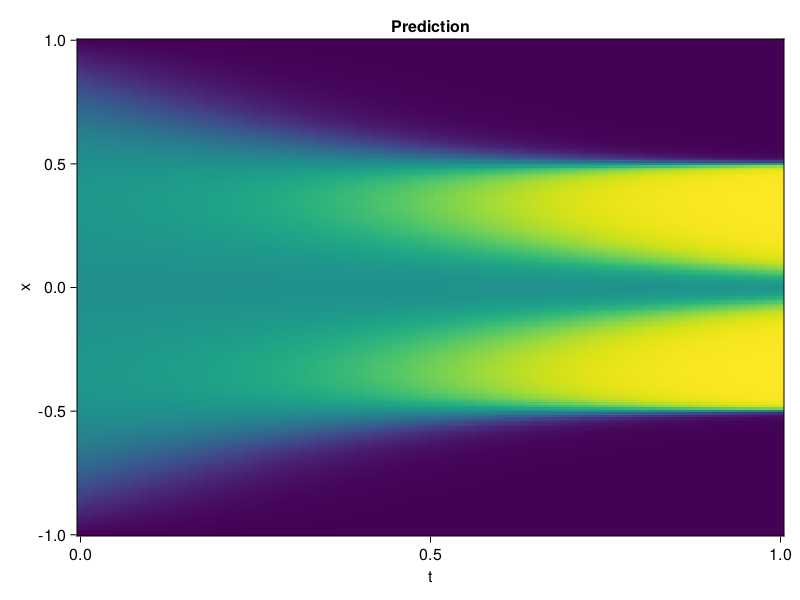

Allen-Cahn Equation with Sequential Training
In this tutorial we are going to solve the Allen-Cahn equation with periodic boundary condition from $t=0$ to $t=1$. The traning process is split into four stages, namely $t\in [0,0.25]$, $t\in [0.0,0.5]$, $t\in [0.0,0.75]$ and $t\in [0.0, 1.0]$.
using ModelingToolkit, IntervalSets
using Sophon
using Optimization, OptimizationOptimJL
@parameters t, x
@variables u(..)
Dₓ = Differential(x)
Dₓ² = Differential(x)^2
Dₜ = Differential(t)
eq = Dₜ(u(x, t)) - 0.0001 * Dₓ²(u(x, t)) + 5 * u(x,t) * (abs2(u(x,t)) - 1.0) ~ 0.0
domain = [x ∈ -1.0..1.0, t ∈ 0.0..0.25]
bcs = [u(x,0) ~ x^2 * cospi(x),
u(-1,t) ~ u(1,t)]
@named allen = PDESystem(eq, bcs, domain, [x, t], [u(x, t)])\[ \begin{align} - 0.0001 \frac{\mathrm{d}}{\mathrm{d}x} \frac{\mathrm{d}}{\mathrm{d}x} u\left( x, t \right) + 5 \left( -1 + \left|u\left( x, t \right)\right|^{2} \right) u\left( x, t \right) + \frac{\mathrm{d}}{\mathrm{d}t} u\left( x, t \right) =& 0 \end{align} \]
Then we define the neural net, the sampler, and the training strategy.
chain = FullyConnected(2, 1, tanh; hidden_dims=16, num_layers=4)
pinn = PINN(chain)
sampler = QuasiRandomSampler(500, (300, 100))
strategy = NonAdaptiveTraining(1, (50, 1))
prob = Sophon.discretize(allen, pinn, sampler, strategy)OptimizationProblem. In-place: true
u0: ComponentVector{Float64}(layer_1 = (weight = [-1.1447736024856567 1.4668797254562378; -0.054989803582429886 1.973517894744873; … ; -1.281700849533081 0.5492502450942993; -1.1007275581359863 0.35345885157585144], bias = [0.0; 0.0; … ; 0.0; 0.0;;]), layer_2 = (weight = [0.4079488515853882 -0.456092894077301 … -0.13559623062610626 0.4242856204509735; -0.3102636933326721 -0.6581706404685974 … -0.6652163863182068 0.46324026584625244; … ; -0.047901783138513565 -0.05109580233693123 … 0.2210678905248642 0.18945986032485962; -0.6974756717681885 -0.5118808746337891 … 0.17322692275047302 0.7173135876655579], bias = [0.0; 0.0; … ; 0.0; 0.0;;]), layer_3 = (weight = [-0.3833366632461548 0.24828261137008667 … -0.213204488158226 -0.4049908220767975; 0.35318678617477417 0.6534011960029602 … 0.45400258898735046 -0.6597714424133301; … ; 0.3356776833534241 0.6453084945678711 … 0.5531968474388123 -0.25171682238578796; -0.48735859990119934 0.3108394145965576 … 0.25112029910087585 -0.2739001512527466], bias = [0.0; 0.0; … ; 0.0; 0.0;;]), layer_4 = (weight = [0.6717827320098877 -0.3783436417579651 … -0.019341517239809036 -0.32287174463272095; -0.540092945098877 -0.7107131481170654 … 0.4267745316028595 0.5383416414260864; … ; -0.2395939975976944 0.16475751996040344 … 0.43852588534355164 0.14293158054351807; -0.594779908657074 -0.6166134476661682 … 0.3900652229785919 0.17698945105075836], bias = [0.0; 0.0; … ; 0.0; 0.0;;]), layer_5 = (weight = [-0.3540949523448944 0.7100193500518799 … -0.16810467839241028 0.5424336194992065], bias = [0.0;;]))We solve the equation sequentially in time.
function train(allen, prob, sampler, strategy)
bfgs = BFGS()
res = Optimization.solve(prob, bfgs; maxiters=2000)
for tmax in [0.5, 0.75, 1.0]
allen.domain[2] = t ∈ 0.0..tmax
data = Sophon.sample(allen, sampler)
prob = remake(prob; u0=res.u, p=data)
res = Optimization.solve(prob, bfgs; maxiters=2000)
end
return res
end
res = train(allen, prob, sampler, strategy)u: ComponentVector{Float64}(layer_1 = (weight = [-1.7539381231325943 0.757327633921475; -0.19788528227944271 1.569658273834245; … ; -1.0973838608617597 -0.7444383934911084; -1.3481420070775043 0.5974774579402662], bias = [-1.278470643735117; 0.5219618241873577; … ; 1.1362648343069246; -0.1998782960561878;;]), layer_2 = (weight = [0.27536338226423335 -0.1848913611102393 … -0.396648783250776 0.3990790609788864; 0.32653708723662006 -1.1348579634402234 … -0.8877404579651886 0.6191466341245805; … ; -0.26923839201292105 -0.2388281568866091 … 0.2720433041529907 0.15398910745499986; -0.6887599287908512 -0.25189944748601506 … 0.5603887946636884 0.8144030643930751], bias = [0.4182675760869581; 0.5044840127145764; … ; 0.03763133049547759; -0.38819450836690683;;]), layer_3 = (weight = [-0.3032952741915089 0.15751082280895023 … -0.5456412657632577 -0.1570685014477068; 0.2447452022997386 0.795448207802381 … 0.5953227538843321 -0.9350514397744799; … ; 0.37703372107246874 0.9957305822823308 … 0.5405545890239521 0.36052495689163416; -0.18066093040792824 0.2529635118026757 … -0.02103992724205413 -0.17889983978896784], bias = [-0.08553150315966287; 0.7392308294643802; … ; -0.03966149730367982; 0.017107016102506565;;]), layer_4 = (weight = [0.774458329055821 -0.6244621512960261 … -0.09755079370175834 -0.11775514463502046; -1.9543443225546715 -1.173766683483428 … 0.4153568503791815 0.695465819245201; … ; -0.16521518089843332 -0.05700197927175745 … 0.2700627620572066 0.24062351440170204; -0.4088176024345975 -0.8116185847542758 … 0.4518245199127807 -0.10259821771232085], bias = [0.08606725685364074; 0.49652658805014716; … ; 0.09743911160348262; -0.16294667471921498;;]), layer_5 = (weight = [-0.24694477160567546 0.8399466618962208 … 0.015875217627270493 0.32548077962373145], bias = [-0.3881206957105855;;]))Let's plot the result.
using CairoMakie
phi = pinn.phi
xs, ts = [infimum(d.domain):0.01:supremum(d.domain) for d in allen.domain]
axis = (xlabel="t", ylabel="x", title="Prediction")
u_pred = [sum(pinn.phi([x, t], res.u)) for x in xs, t in ts]
fig, ax, hm = heatmap(ts, xs, u_pred', axis=axis)